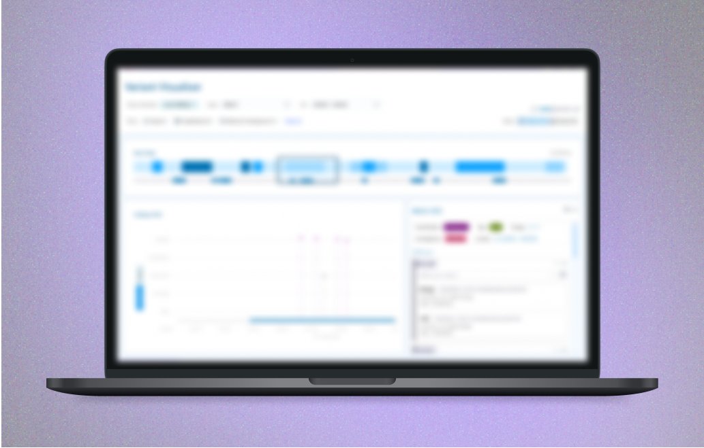

Making Genomic Data Easier to Explore

what is it?
A visualizer of patient genomic data and client internal knowledgebases for variant scientists to make actionable clinical insights.
...what does that even mean?
Without all the scientific terminology, I essentially helped create a tool that makes it much easier to see differences in a person’s DNA. This helps variant scientists explore genetic differences and identify if they're relevant to a diagnosis.
what did I do?
I was the sole designer on this project, working with a developer partner to take the product from nothing to a mostly built-out MVP. I led design sprints, ran critique sessions, and led meetings with product and tech teams to figure out the problem and how best to solve it. Through lots of sketching, prototyping, and conversations with professionals in the field, I also created Figma prototypes for future features.
takeaways
Going into this project, I knew absolutely nothing about genomics, which was definitely intimidating at first! But it ended up being such an fun and interesting experience, and I loved having the freedom to explore the problem, learn from experts, and really take ownership of the design process.
I can’t share too much about this project publicly, but I’d love to talk about it more in-depth over a call. Send me a message at kateshih@utexas.edu!